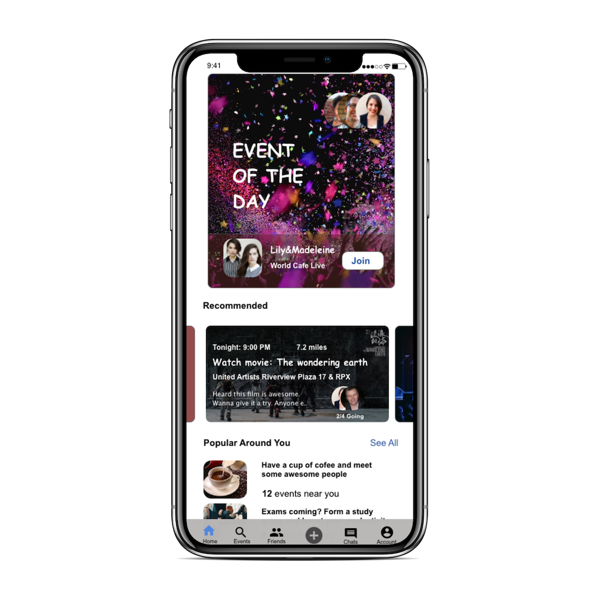

Web Development
- Responsive and adaptive design
- Development in React.js, AngularJS, Node.js,and more
- Application deployment on Amazon Web Services and Heroku
- Algorithm design for optimum performance
View Demos

Mobile Development
- Unit and end-to-end testing
- Database structure design
- Integrating RESTful service architectures, and Web architecture components
View Demos

Data Mining and Computing Systems
- Java, JavaScript, Python, C and more
- Data mining and analysis
- Deep, feed-forward artificial neural network
View Projects